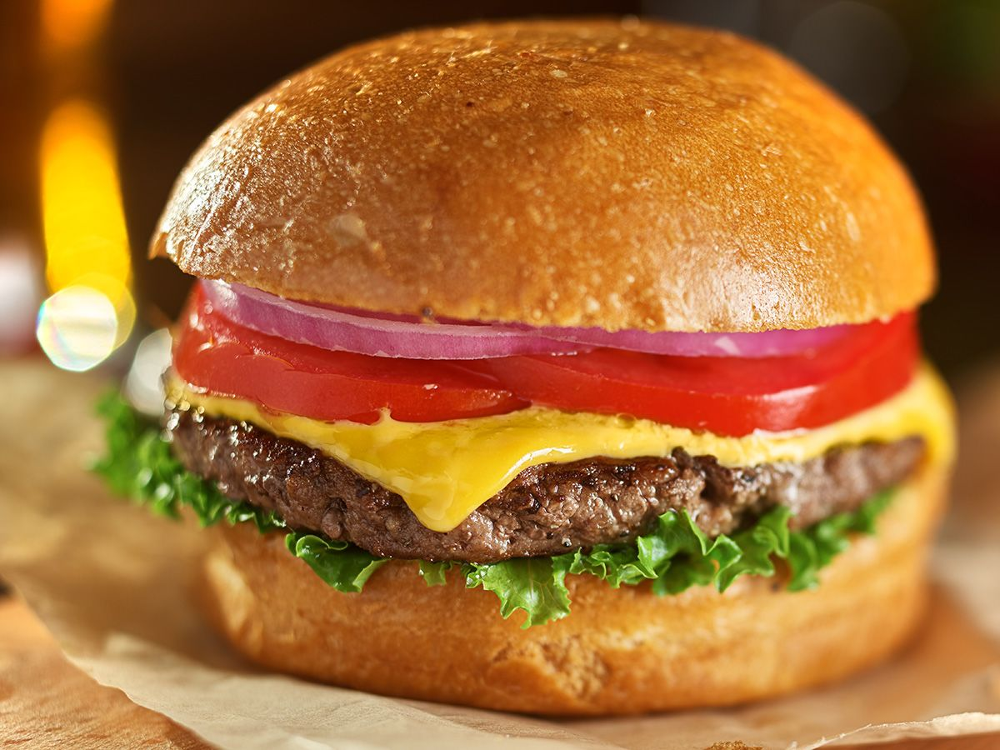

Hamburger

Description
Classic American hamburger!
Ingredients
- 4 oz 85/15 ground beef
- salt
- pepper
- hamburger bun
- shredded lettuce
- tomato
- ketchup
- oil
Steps
- Slice tomato into slices
- Shape ground beef into shape of a patty and season both sides with salt and pepper.
- Heat pan to medium heat and toast both side of your hamburger bun.
- Heat pan to medium high heat and coat pan with a layer of oil.
- Cook patty and flip both sides frequently until the patty reaches an internal temperature of 165 degrees. Then remove from pan. Optionally you can add a slice of cheese.
- Add ketchup, and lettuce to the bottom of your bun. Then add your patty and a slice of tomato.